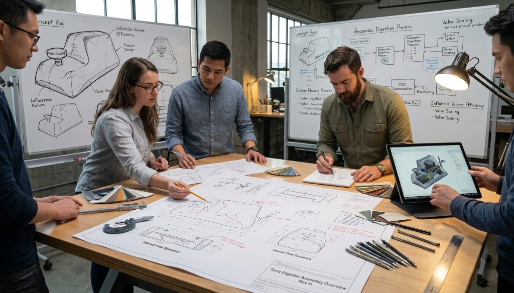

Engineering Circular Systems
The science and design principles behind Terra Digester biotechnology — from anaerobic digestion fundamentals to long-term field reliability.
Speak With Our Team
Anaerobic Digestion: The Core Process
Anaerobic digestion (AD) is a biological process in which microorganisms break down organic material in the absence of oxygen. It is one of nature's oldest biochemical cycles — and one of the most effective methods for converting organic waste into usable energy and plant nutrients.
The process occurs in four interconnected biochemical stages, each driven by specialised microbial communities. Understanding and managing these stages is central to consistent, high-performance system operation.
- AD has been practiced in engineered systems for over a century across wastewater treatment, agricultural waste management, and food processing.
- The process is temperature-sensitive: mesophilic operation (30–40°C) suits most small-scale applications.
- Feedstock quality and retention time are the primary variables governing gas yield and digestate quality.
- Biogas composition is typically 50–70% methane by volume, with the remainder primarily carbon dioxide.
1. Hydrolysis
Complex organic polymers (carbohydrates, proteins, fats) are broken into simpler soluble compounds by hydrolytic bacteria.
2. Acidogenesis
Soluble compounds are fermented by acidogenic bacteria into volatile fatty acids, alcohols, hydrogen, and CO₂.
3. Acetogenesis
Acetogens convert volatile fatty acids into acetate, hydrogen, and CO₂ — the direct substrates for methanogenesis.
4. Methanogenesis
Methanogenic archaea convert acetate and hydrogen into methane (CH₄) and CO₂ — producing the biogas output.
50–70% CH₄
Nutrient-rich biofertiliser
System Design Philosophy
Four principles that guide every Terra Digester system — from initial design through to field operation.
Modularity
Every system is designed as a discrete, self-contained module. Modules are scalable — additional units can be added as feedstock volumes grow. Components are replaceable without requiring full system shutdown, and units are designed to be transportable for relocation or redeployment.
Simplicity
Fewer moving parts means lower maintenance burden and higher operational reliability in challenging field environments. Our design process actively removes complexity — every component must justify its presence. Simplicity is not a compromise; it is a deliberate engineering choice that serves long-term performance.
Accessibility
Systems must be operable and serviceable by local users without specialised technical training. User interfaces are intuitive. Maintenance tasks are designed to be performed using locally available tools. Operational parameters are communicated in plain language, not engineering jargon.
Resilience
Designed for harsh environments, variable feedstock composition, and irregular maintenance schedules. Systems are engineered with tolerances that accommodate real-world variation, not laboratory ideals. Resilience engineering acknowledges that field conditions are always more challenging than design assumptions.
Materials Selection & Safety Engineering
Material choices directly impact durability, safety, and environmental performance. We apply rigorous selection criteria.
Corrosion-Resistant Construction
Contact surfaces are specified in materials with documented resistance to the corrosive environment of anaerobic digestion — including organic acids, hydrogen sulphide, and digestate slurries.
Food-Grade Standards
Where systems process organic waste intended to produce biofertiliser for food-crop applications, food-grade material standards are applied to prevent contamination of the output stream.
UV & Weather Resistance
External-facing components are specified for UV stability and weather resistance appropriate to the intended deployment climate — from tropical to arid to temperate conditions.
Pressure Relief Design
Systems incorporate calibrated pressure relief mechanisms to prevent over-pressurisation, ensuring safe operation even under atypical gas production conditions.
Leak Prevention Architecture
Gas pathways are designed with leak prevention as a primary requirement — using sealed joints, tested connections, and installation protocols that minimise failure points.
Compliance-Oriented Design
System designs are developed with awareness of relevant international safety standards for biogas systems, supporting the compliance process for local permitting and deployment.
End-User Safety Documentation
All systems are accompanied by installation and operational guidance in plain language, covering safe start-up procedures, normal operating parameters, and response protocols for abnormal conditions.
Engineered for Long-Term Performance
A system that fails after two years provides no long-term value. Our reliability engineering starts at the design stage.
Design Life Expectations
Systems are designed with a target service life that justifies the investment for the operator. Critical structural components are over-specified relative to expected stress loads to provide operational margin.
Preventive Maintenance Philosophy
Maintenance requirements are designed to be periodic, simple, and achievable without specialist equipment. Routine checks focus on the few parameters that matter most for system health, avoiding maintenance complexity that discourages consistent upkeep.
Serviceable by Design
Wear components are selected for compatibility with standard parts available in our primary markets (such as Europe) wherever possible, reducing reliance on specialist supply chains in those regions. Replacement procedures are documented in maintenance guides designed for technically competent non-specialists. For customers outside these regions, key components can be supplied through our global fulfillment network to ensure serviceability.
Engineering Is a Continuous Practice
Our systems evolve. We incorporate field learning, user feedback, and updated materials science into each iteration of our designs. A system delivered today reflects the accumulated knowledge of previous deployments — and today's learnings will improve tomorrow's systems.
We do not consider any design final. In engineering, as in biology, adaptation is survival.
Explore a Technical Partnership